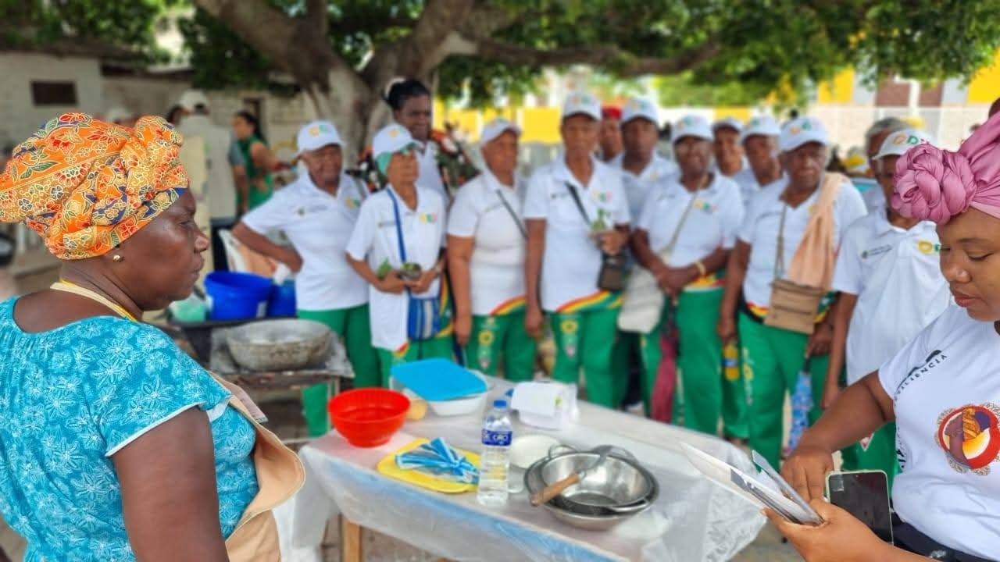

INSULAR DIGITAL PRESENTA
INSU
REVISTA DIGITAL
CULTURA · LITERATURA · TERRITORIO
CULTURA · HISTORIA · TERRITORIO
BOCACHICA, UN TERRITORIO QUE TIENE MUCHO QUE CONTAR.
Historias, recuerdos, saberes y expresiones culturales que nos permiten reconocer quiénes somos y preservar la memoria de nuestras comunidades.

INSU
MEMORIA · CULTURA · IDENTIDAD
01 /
INSU
Las historias de nuestra gente merecen permanecer.
INSU es una iniciativa editorial de Insular Digital que abre un espacio para compartir publicaciones, expresiones literarias, recuerdos y conocimientos relacionados con Bocachica y su gente.
La revista y su biblioteca digital buscan contribuir a la conservación y difusión de la memoria histórica, cultural y comunitaria del territorio.
PUBLICACIONES EDITORIALES
02
Revista INSU.
Consulta las ediciones digitales de nuestra revista.
ARCHIVO CULTURAL Y COMUNITARIO
03
Biblioteca digital.
Un recorrido por la historia, las tradiciones, los saberes y las memorias de Bocachica.
ARCHIVO HISTÓRICO
Historia de Bocachica
Acontecimientos, lugares, documentos y transformaciones de nuestro territorio.
Explorar categoría ↗ TRADICIÓN ORALMitos y leyendas
Relatos, creencias y narraciones transmitidas de generación en generación.
Explorar categoría ↗ SABERES LOCALESOficios y saberes
Prácticas tradicionales, conocimientos cotidianos y formas de vida de la comunidad.
Explorar categoría ↗ FOTOGRAFÍAGalerías del ayer
Fotografías antiguas, escenas de la vida cotidiana y recuerdos del territorio.
Explorar categoría ↗ MEMORIA HUMANAPersonajes de Bocachica
Historias de vida, testimonios y perfiles de personas que forman parte de la memoria comunitaria.
Explorar categoría ↗ CONSULTA DIGITALDocumentos y publicaciones
Revistas, textos y materiales de interés histórico, cultural y educativo.
Explorar categoría ↗
01 · MEMORIA HISTÓRICA
Historia de Bocachica.
Un espacio dedicado a preservar y compartir información sobre el pasado de Bocachica: sus lugares, acontecimientos, transformaciones y documentos históricos.
Los contenidos se incorporarán progresivamente, con sus fuentes y referencias cuando estén disponibles.
02 · TRADICIÓN ORAL
Mitos y leyendas.
Relatos populares, leyendas, creencias y narraciones que hacen parte de la tradición oral y de la memoria de las comunidades.
Cada relato podrá identificar a su narrador o fuente y distinguir la tradición oral de los hechos documentados.
03 · CONOCIMIENTOS LOCALES
Oficios y saberes.
Conocimientos tradicionales, prácticas, oficios y experiencias que ayudan a comprender la vida cotidiana y la identidad cultural de Bocachica.
Un espacio para reconocer los saberes de quienes los practican y los transmiten a nuevas generaciones.
04 · MEMORIA FOTOGRÁFICA
Galerías del ayer.
Fotografías antiguas, imágenes familiares, lugares, celebraciones y escenas que permiten recordar cómo ha cambiado el territorio.
Las imágenes podrán acompañarse de fechas aproximadas, descripciones y datos sobre su procedencia.
05 · PERSONAS E HISTORIAS
Personajes y memoria viva.
Perfiles, entrevistas y testimonios de personas cuyas experiencias, conocimientos o participación hacen parte de la memoria social y cultural de Bocachica.
Las historias se publicarán respetando la identidad, la dignidad y las autorizaciones correspondientes.
06 · ARCHIVO EDITORIAL
Documentos y publicaciones.
Un espacio para reunir ediciones de INSU, textos, documentos de consulta y otros materiales digitales relacionados con la cultura, la historia y la educación.
Los documentos se incorporarán con información sobre su título, origen y condiciones de consulta.
LECTURA Y CREACIÓN
04
Literatura digital.
Un espacio para la palabra escrita, la imaginación y las distintas formas de contar nuestras experiencias.
Poemas
Expresiones poéticas, sentimientos e imágenes que encuentran su lugar en la palabra.
Cuentos y relatos
Narraciones para imaginar, recordar y descubrir otras experiencias.
Crónicas y ensayos
Textos que exploran ideas, experiencias, cultura y sociedad.

MEMORIA Y TERRITORIO
CULTURA E IDENTIDAD
La memoria vive en nuestras historias.
Conservar los recuerdos, escuchar las voces de la comunidad y reconocer los saberes tradicionales es una forma de mantener viva la relación entre la gente y su territorio.
Recorrer la biblioteca
INSULAR DIGITAL
Compartir una historia ↗
Las historias nos conectan.
¿Tienes fotografías antiguas, documentos, relatos o recuerdos de Bocachica para compartir con la comunidad?
CONTACTO
Conectemos.
Para consultas, propuestas editoriales o aportes a la memoria cultural de Bocachica, comunícate con el área de comunicaciones de Insular Digital.
ÁREA DE COMUNICACIONES
corpoindicomunicaciones@gmail.com
ORGANIZACIÓN
Corporación Insular Digital · COINDI